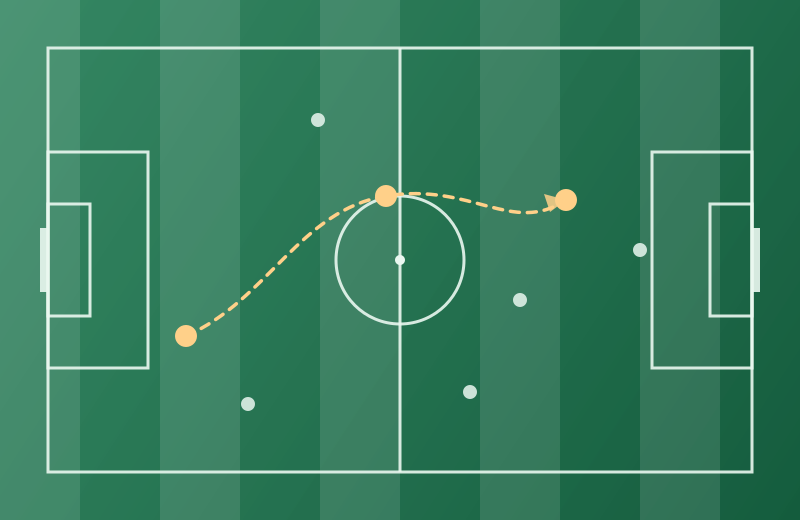
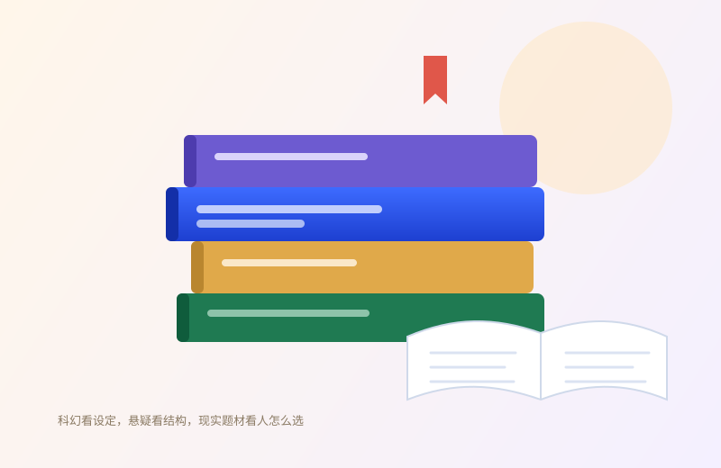

篮球
下课后的半场最解压。投篮手感不好的时候，就多传球、多防守，总能帮上忙。
03 / 兴趣生活
运动让我保持精力，小说让我保留想象力，社交让我知道事情该找谁一起做。 这三件事支撑了我大部分的好状态。

我踢边前卫，最重要的任务不是进球，而是把球从边路送到该去的地方。 跑动、接应、回防，这些不显眼的工作决定了球队的节奏。
踢球教会我两件事：一是位置感，知道什么时候该出现在哪里； 二是沟通，喊一声“我来”比默默抢球有效得多。这两件事在班级工作里同样管用。
球场之外
如果说足球是我的主项，篮球和组局就是我的日常。
下课后的半场最解压。投篮手感不好的时候，就多传球、多防守，总能帮上忙。
各类小说都读：科幻看设定，悬疑看结构，现实题材看人怎么选。
喜欢把不同圈子的人凑到一起。组织一次活动，比认识十个人更有成就感。
写代码和写作业时的背景音。节奏稳一点，思路也稳一点。
我不太挑类型，只看这本书有没有把“人为什么这样选”讲清楚。 科幻给我尺度感，悬疑给我结构感，现实题材给我共情。
第一次读到“把宇宙当背景”的写法，合上书之后看夜空的感觉都变了。
两条线并行推进，最后合成一个答案。读完想回头翻第一页找伏笔。
语言很轻，重量很大。看完会想给家里打个电话。

节奏
不是每天都满，但每周都有几件“必须做”的事撑着。
表格较宽，窄屏下可以左右滑动查看 →
| 时间 | 上午 | 下午 | 晚上 |
|---|---|---|---|
| 周一至周三 | 专业课 | 实验课 / 自习 | 班级通知与材料 |
| 周四 | 专业课 | 网页作业推进 | 阅读 |
| 周五 | 专业课 | 复盘本周作业 | 篮球 |
| 周六 | 足球 | 自由安排 / 约朋友 | 看电影或读书 |
| 周日 | 补作业 | 整理下周班级事务 | 早睡，留给周一 |